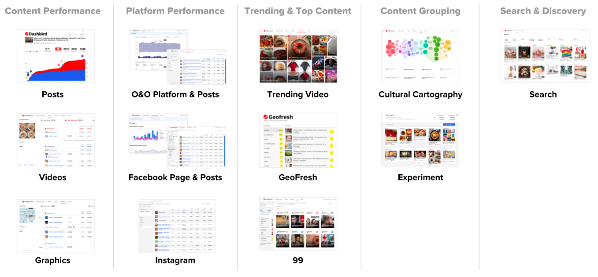
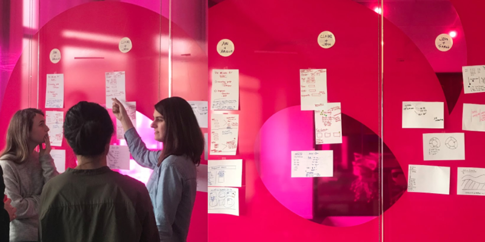
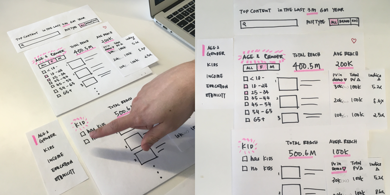
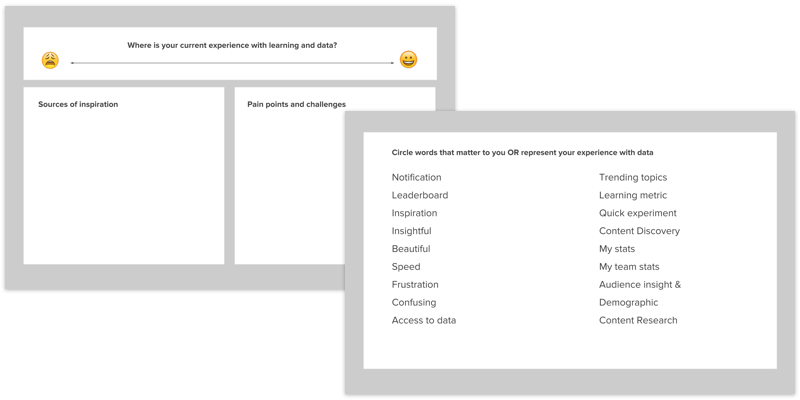
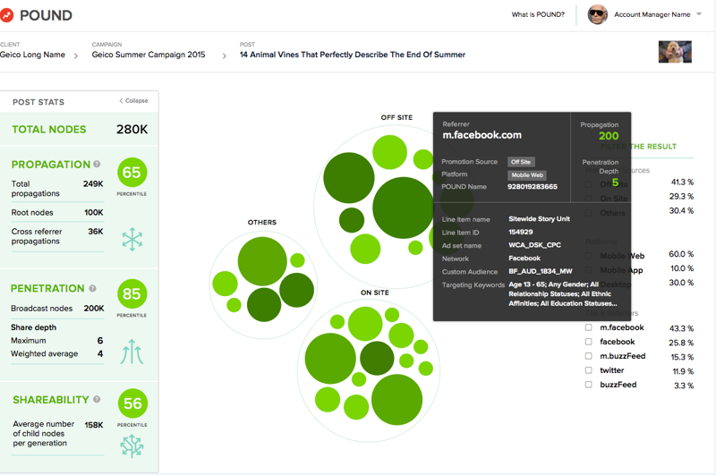

BuzzFeed’s El Dashboard
Building BuzzFeed analytics tool suite to empower data-driven decisions

Over the past 18 months years, I led design and user problems of a suite of
internal dashboards at BuzzFeed that provides core data and insights to our
editorial and business team.
BuzzFeed creates over 600+ videos, posts and graphics a week.. We publish
those content to our buzzfeed.com, 20+ different social media platforms, and
track their performance data. Those data enables us to learn about the content
our audience loves and hates, which power the content creation feedback
loop: Create ➝ Publish ➝ Learn ➝ Iterate.
Why invest our own analytic tools?
-
Enable everyone from content creator and management with easy access to
our giant well of data. Reduce the friction of access data from different
sources and tools, hence speed up the feedback loop. We want people to
spend more time on learning from data to learn and less time on cobbling
data from different sources.
-
Provide essential metrics of success to measure success across
the board. With over 500 active data consumers, there are various degrees of
knowledges within the org about how to best use data to make decision.
While some team are strong domain expert, some teams resorted to a subjective
ways to set goals and make tactical plans. A unified, hyper-focused tools
that provides essential data that measure what are actually important to the
success of our content, platforms, and company is an investment.
- Experiment
Create a self-serving insight tools by a dedicated team of product managers,
engineers, designers and data-scientist that are hyper-focus on our ever-changing
business needs as well as encourage everyone to learn from data and make
informative decision.
Process
Define the problems by deeply understanding the use and business needs
through research, user interview, product audit
and hand-on discovery exercises.

Design sprint

Describe an ideal 3-star experience

Research

closeup
Explore the solutions in a wide range of directions
through data visualiation research, low-fidelity sketches, wireframes and prototype.
Refine the direction to a simple effective and scalable design.
Solutons
Over the past 18 months, El Dashboard suites has evolves include 4 categories of tools:
1
Content Insights
Content insights tools surface the key performance metrics of a piece of content.
The table-based dashboards powered by robust filters, search and sort functions is
efficient and flexible for exploring a huge dataset, so users can look up “What
are the most commented videos in the past weeks?” or “What are the least shared contents
about Béyonce?”

99 (image) - A visual hall of fame dashboard that shows content that broke 90th and above benchmark
3
Signal
Users are looking for “actionable insight” or signal about exceptional top performing content
they can take actionable. The visual-centric dashboard and its slack notification enable our
content creators to quickly follow up on the viral success.
99 (image) - A visual hall of fame dashboard that shows content that broke 90th and above benchmark
99 (image) - A visual hall of fame dashboard that shows content that broke 90th and above benchmark
2
Discovery
Enable editorial and business to discover and explore BuzzFeed’s catalog of 3 millions of videos, graphic and
posts by searching, tagging, and content grouping.
99 (image) - A visual hall of fame dashboard that shows content that broke 90th and above benchmark
4
Health Monitor
Monitor the overall health and performance of our platforms by tracking content output and performance metric
so we can better track the long-term growth and trend.
99 (image) - A visual hall of fame dashboard that shows content that broke 90th and above benchmark
99 (image) - A visual hall of fame dashboard that shows content that broke 90th and above benchmark
Outcomes
El Dashboard continues to grow and thrive as the core analytic tools for the company. Users are delighted with the speed
and usability of the tools that enable them to learn and make data-driven decision. Despite some technical short-coming,
we are work hard to expand and outreach
Results
- The perk of internal users who are only a few floor away or slack message, we benefit from very tight feedback
loop to improve their products. We often design with the users via Design sprint to help to do their job better.
Very granular usage tracking to enable use to make our better better.
- Think systematically and effeciency for everything from design, front end component system enable us to move fast.
Building internal tools is a luxiours. Focus on the most efficient way to show data for people to do their job.
Don’t get caught up in the weeds and fancy visualization. Unlike an enterprise and consumer products where the design is
- It is never just a number on the screen. Fully understand why a metric is important to the users and where he number
is coming from (which endpoint, what frequency, what grandular, what caluation). Be sure to validate the impact of any
- Building is only half the battle. Onboarding, education and continued outreach is the other half.
My role: Sole product design lead. Also Product Manage the basic dashboards. Along with 1 products, 2 data scientist,
4 front-end engineers, 4 back-end engineers.